to South Korea!
We took the Camellia Line ferry to Busan, South Korea.
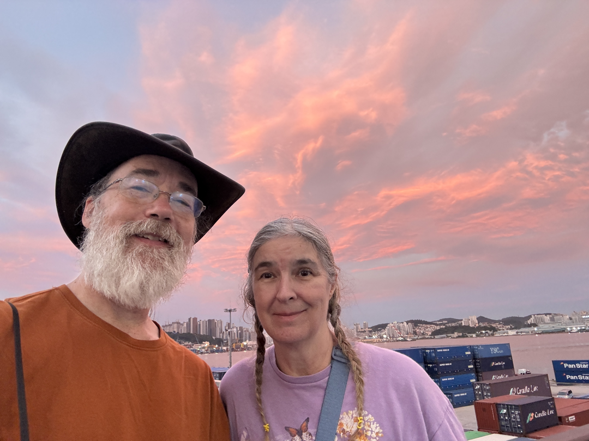
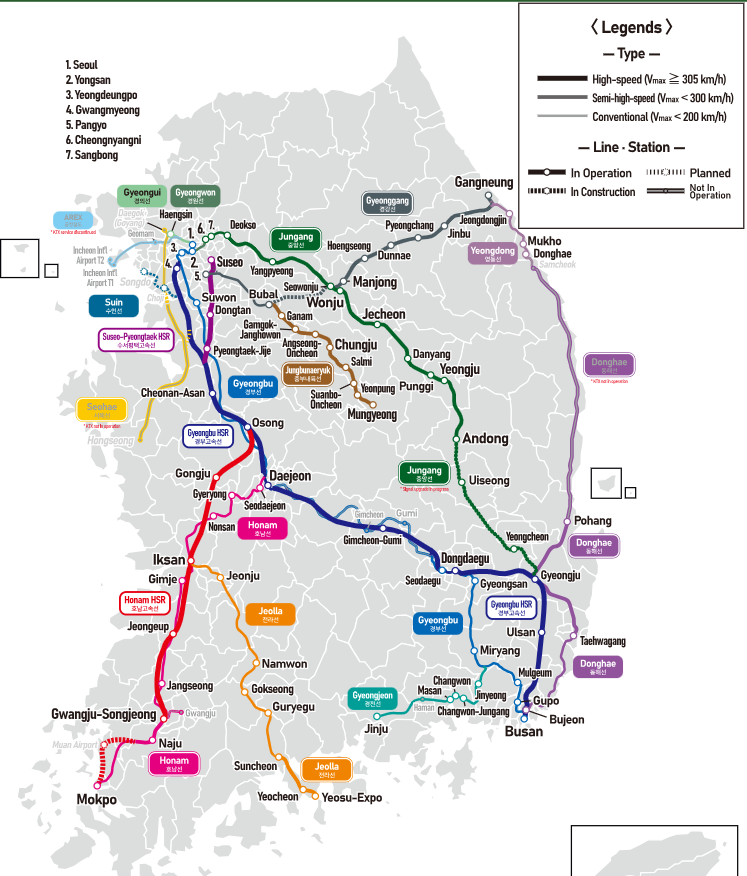
and immediately trained out to stay in Miryang with a Couchsurfing Hostess, Chung, who almost contantly travels, and was super generous!
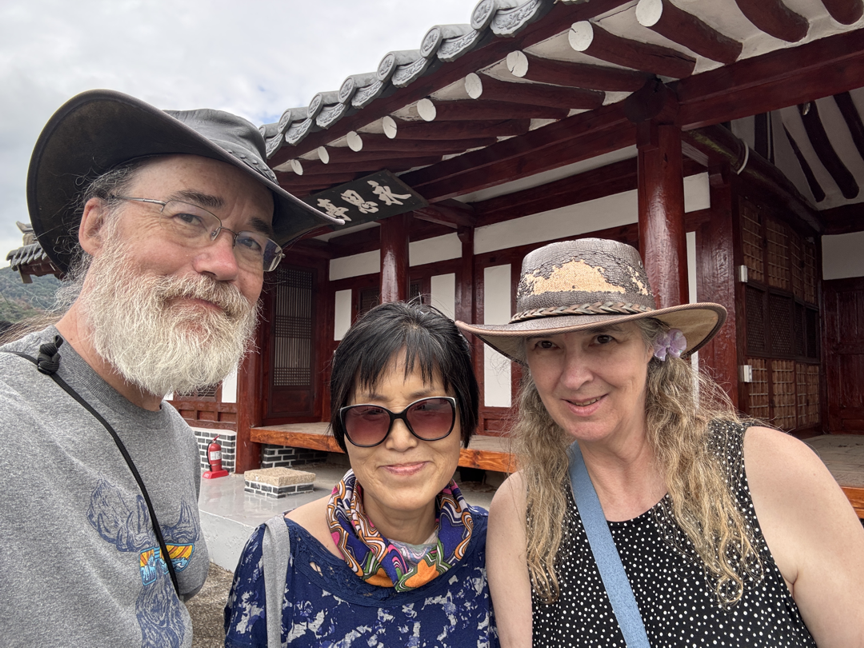
She showed us all around Miryang - the local market, her home growing up, and this hundreds of years old pavilion and park.
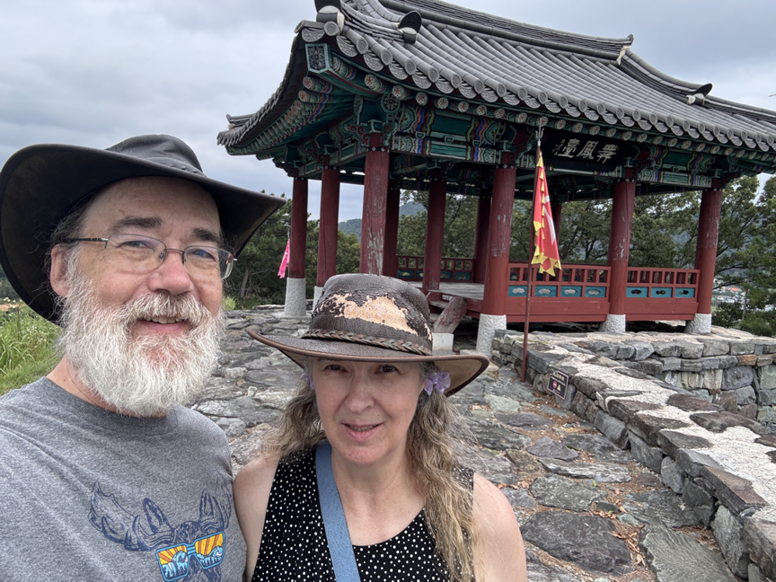
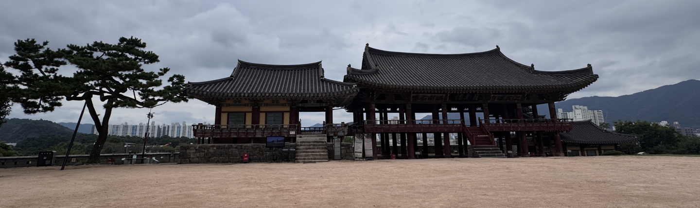
Took the train back to Busan
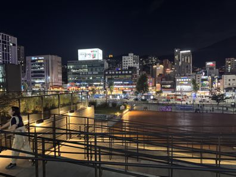
Friday walked and bussed up to seunggajeong Pavilion - site of a Japanese castle,BR>
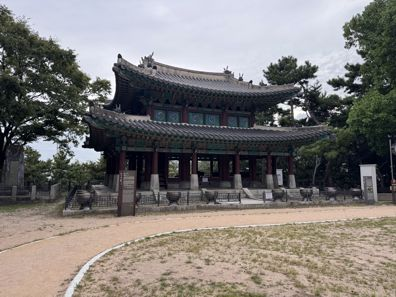
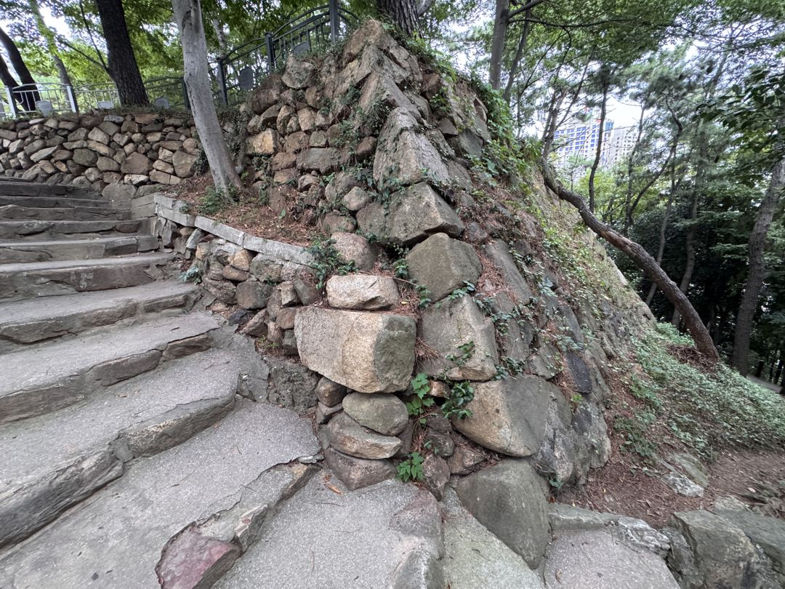
Saturday we Subway and Bussed to Nambo and the coastal walk
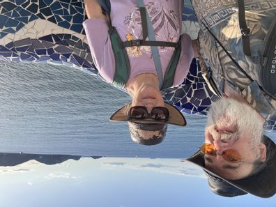
Dadaepo Beach at Sunset
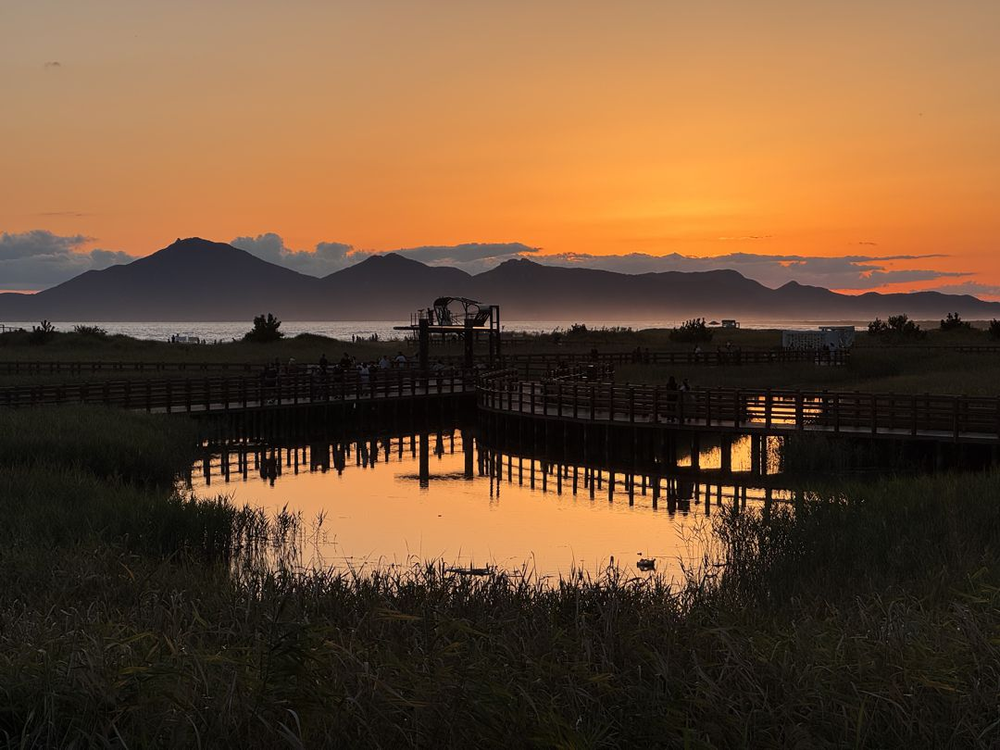
We moved our base to Pyeongtaek, right by Ft Humphreys with our friends from Fairbanks!
We had a couple of mellow, planning days, caught up a bit on Strange New Worlds and Three Body Problam,
and ventured into Pyeongtaek to visit the Traditional Market:
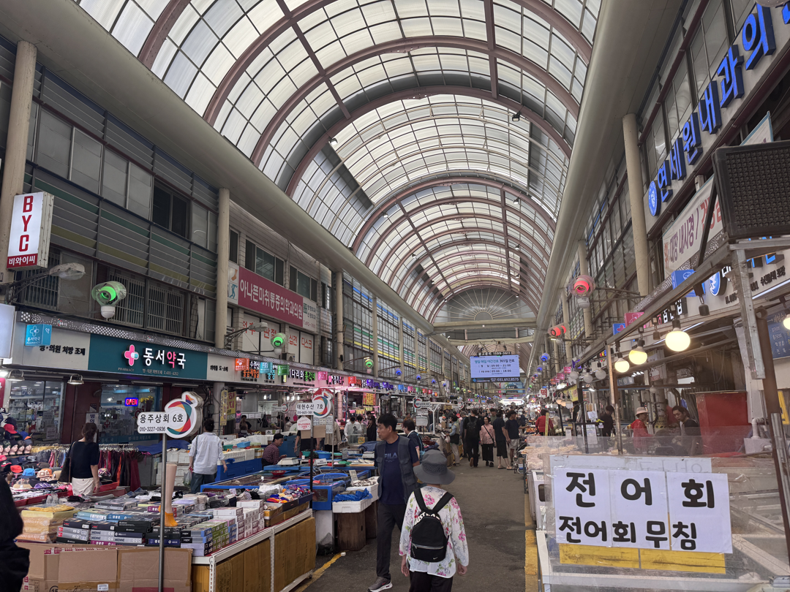
Then we trained up to an International Market (I was looking for another pair of shorts.
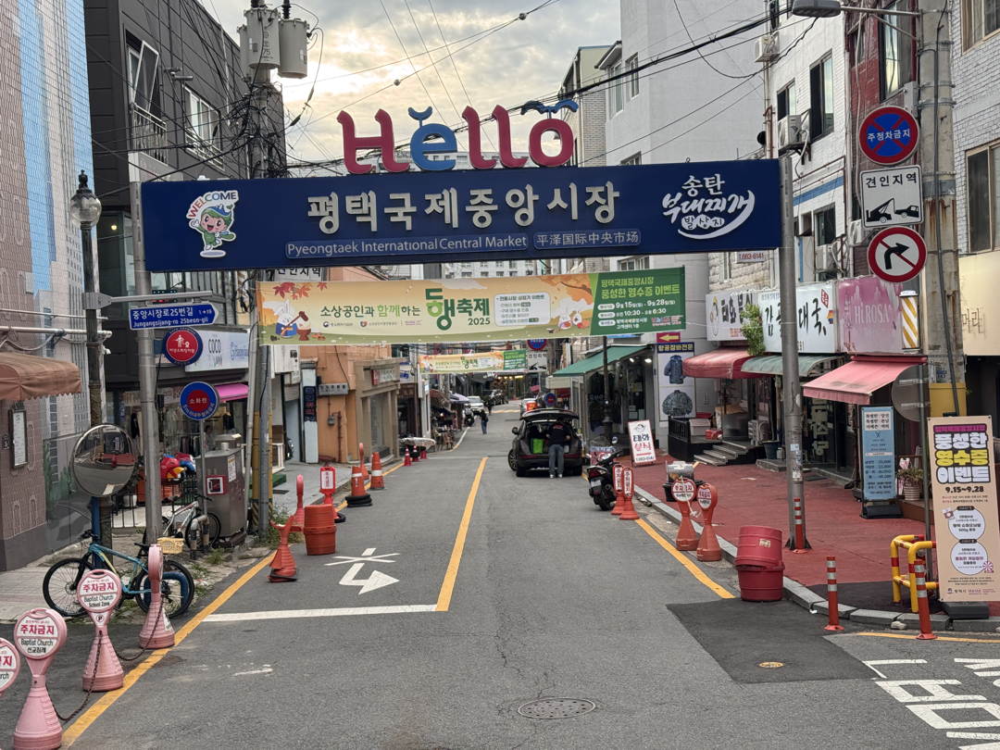
Shopped around, and had Turkish Kababs for dinner.
Then back to the AK Plaza (Alaska, no, but that's what we'll call it!). Found shorts on sale!
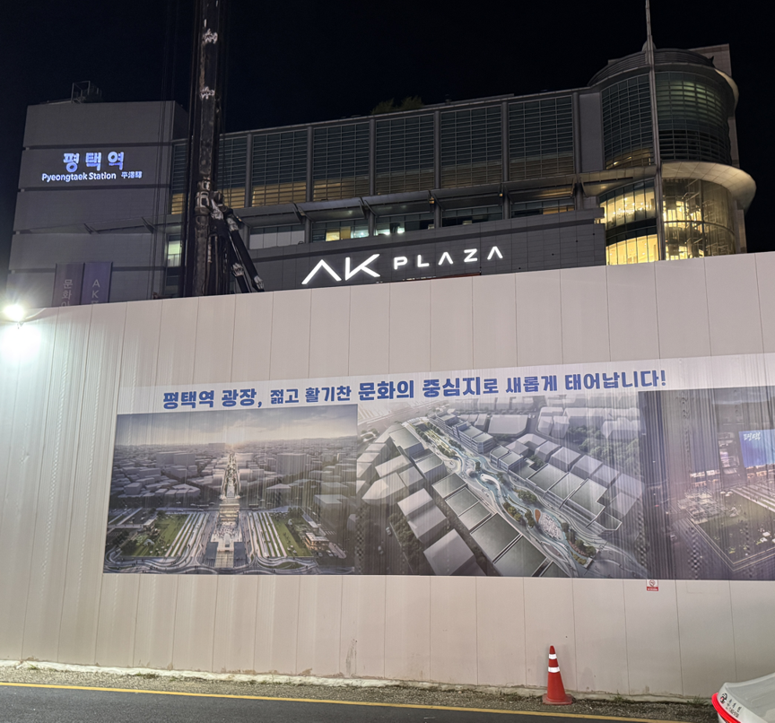
Suwan Castle - it's a city. with a wall around and through it. We walked 3 hours and did about 1/4 of it. whew!
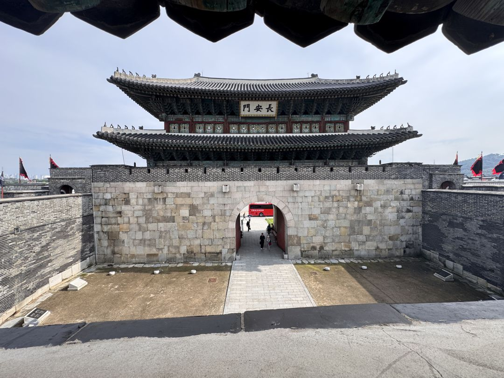
Here we are at the top of the 140 meter hill.
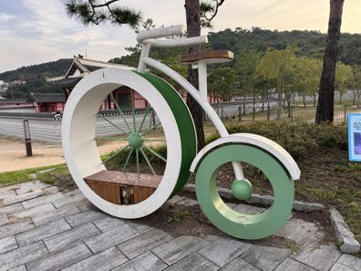
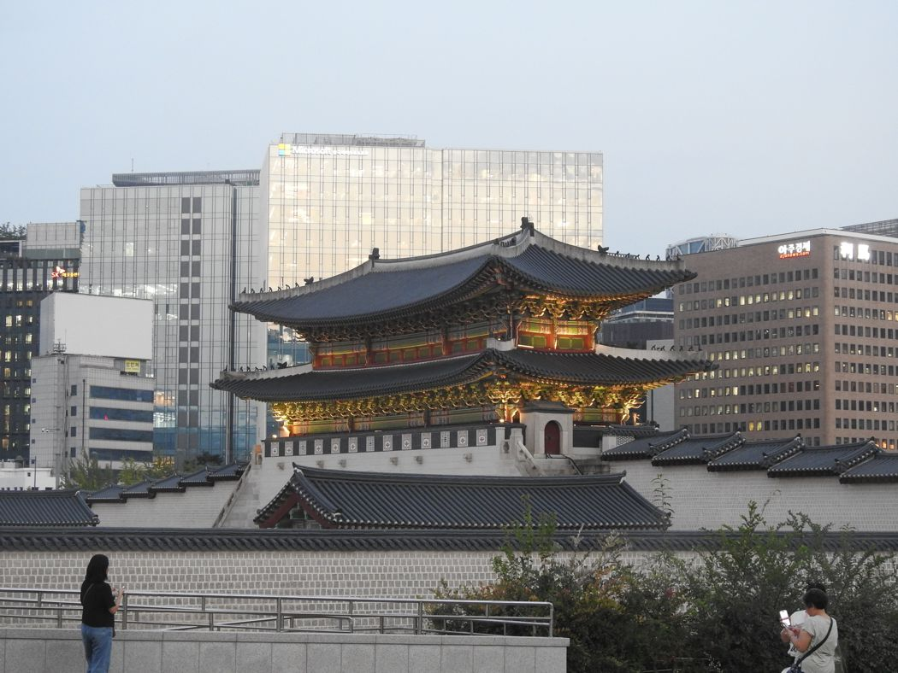
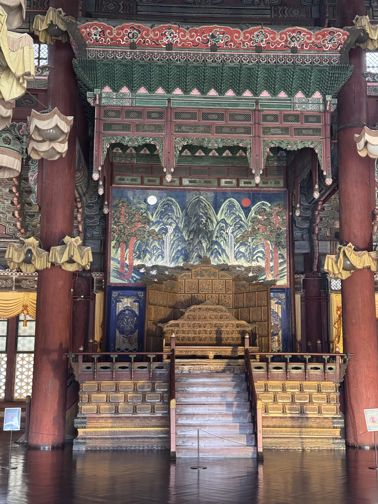
Palace Thrones
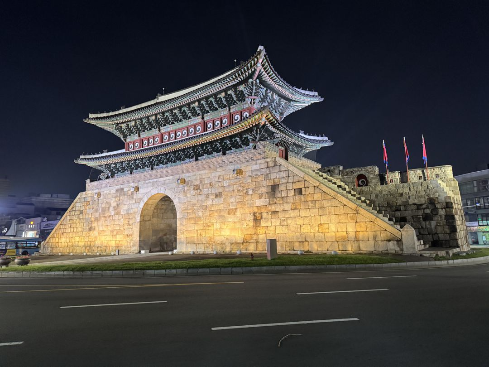
Explored the South Korea National Museum
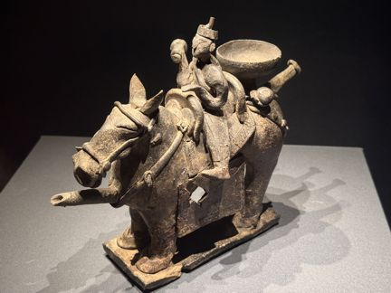

Traveling to Taiwan 10/01 from South Korea
then Vietnam after on 10/10.